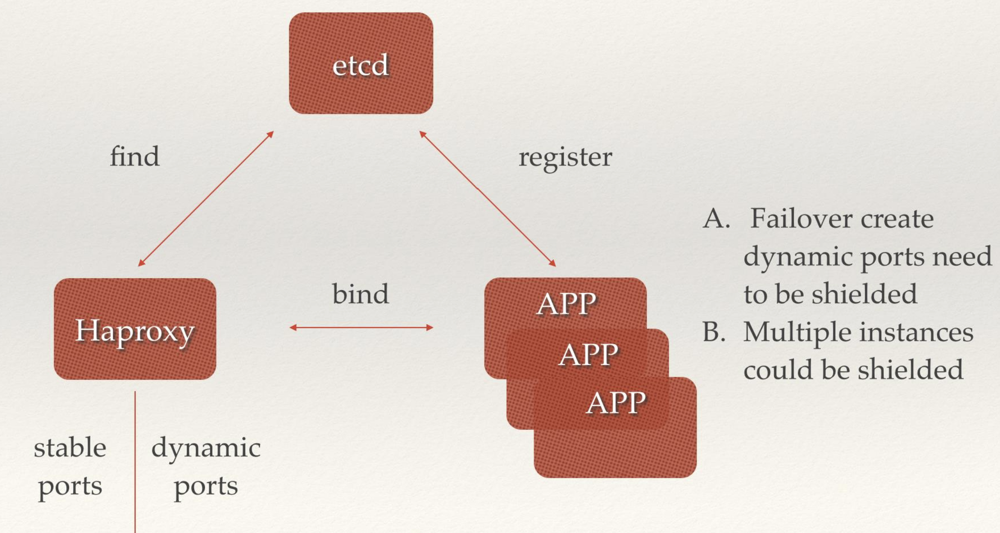
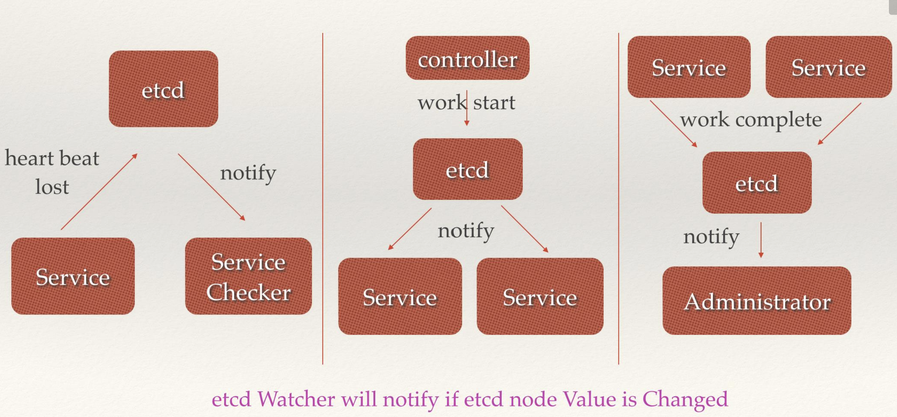

二十三 ETCD详解
23.1 ETCD概述
Etcd 是 作为K8S必不可少的键值元存储系统，需要进行系统的学习来更好的了解K8S，
23.1.1 ETCD简介
etcd是CoreOS团队于2013年6月发起的开源项目，它的目标是构建一个高可用的分布式键值(key-value)数据库。etcd内部采用raft协议作为一致性算法，etcd基于Go语言实现。
23.1.2 发展历史
{kind=link}
23.1.3 ETCD特点
- 简单：安装配置简单，而且提供了HTTP API进行交互，使用也很简单
- 安全：支持SSL证书验证
- 快速：根据官方提供的benchmark数据，单实例支持每秒2k+读操作
- 可靠：采用raft算法，实现分布式系统数据的可用性和一致性
23.1.4 概念术语
-
Raft：etcd所采用的保证分布式系统强一致性的算法。
-
Node：一个Raft状态机实例。
-
Member： 一个etcd实例。它管理着一个Node，并且可以为客户端请求提供服务。
-
Cluster：由多个Member构成可以协同工作的etcd集群。
-
Peer：对同一个etcd集群中另外一个Member的称呼。
-
Client： 向etcd集群发送HTTP请求的客户端。
-
WAL：预写式日志，etcd用于持久化存储的日志格式。
-
snapshot：etcd防止WAL文件过多而设置的快照，存储etcd数据状态。
-
Proxy：etcd的一种模式，为etcd集群提供反向代理服务。
-
Leader：Raft算法中通过竞选而产生的处理所有数据提交的节点。
-
Follower：竞选失败的节点作为Raft中的从属节点，为算法提供强一致性保证。
-
Candidate：当Follower超过一定时间接收不到Leader的心跳时转变为Candidate开始竞选。
-
Term：某个节点成为Leader到下一次竞选时间，称为一个Term。
-
Index：数据项编号。Raft中通过Term和Index来定位数据。
23.1.5 相关原理
23.1.5.1 数据读写顺序
为了保证数据的强一致性，etcd集群中所有的数据流向都是一个方向，从 Leader （主节点）流向 Follower，也就是所有 Follower 的数据必须与 Leader 保持一致，如果不一致会被覆盖。
用户对于etcd集群所有节点进行读写
- 读取：由于集群所有节点数据是强一致性的，读取可以从集群中随便哪个节点进行读取数据
- 写入：etcd集群有leader，如果写入往leader写入，可以直接写入，然后然后Leader节点会把写入分发给所有Follower，如果往follower写入，然后Leader节点会把写入分发给所有Follower
23.1.5.2 leader选举
假设三个节点的集群，三个节点上均运行Timer（每个Timer持续时间是随机的），Raft算法使用随机Timer来初始化Leader选举流程，第一个节点率先完成了Timer，随后它就会向其他两个节点发送成为Leader的请求，其他节点接收到请求后会以投票回应然后第一个节点被选举为Leader。
成为Leader后，该节点会以固定时间间隔向其他节点发送通知，确保自己仍是Leader。有些情况下当Follower们收不到Leader的通知后，比如说Leader节点宕机或者失去了连接，其他节点会重复之前选举过程选举出新的Leader。
23.1.5.3 判断数据是否写入
etcd认为写入请求被Leader节点处理并分发给了多数节点后，就是一个成功的写入。那么多少节点如何判定呢，假设总结点数是N，那么多数节点 Quorum=N/2+1。关于如何确定etcd集群应该有多少个节点的问题，上图的左侧的图表给出了集群中节点总数(Instances)对应的Quorum数量，用Instances减去Quorom就是集群中容错节点（允许出故障的节点）的数量。
所以在集群中推荐的最少节点数量是3个，因为1和2个节点的容错节点数都是0，一旦有一个节点宕掉整个集群就不能正常工作了。
23.2 ETCD架构及解析
23.2.1 架构图
{kind=link}
23.2.2 架构解析
从 etcd 的架构图中我们可以看到，etcd 主要分为四个部分。
- HTTP Server：用于处理用户发送的 API 请求以及其它 etcd 节点的同步与心跳信息请求。
- Store：用于处理 etcd 支持的各类功能的事务，包括数据索引、节点状态变更、监控与反馈、事件处理与执行等等，是 etcd 对用户提供的大多数 API 功能的具体实现。
- Raft：Raft 强一致性算法的具体实现，是 etcd 的核心。
- WAL：Write Ahead Log（预写式日志），是 etcd 的数据存储方式。除了在内存中存有所有数据的状态以及节点的索引以外，etcd 就通过 WAL 进行持久化存储。WAL 中，所有的数据提交前都会事先记录日志。
- Snapshot 是为了防止数据过多而进行的状态快照；
- Entry 表示存储的具体日志内容。
通常，一个用户的请求发送过来，会经由 HTTP Server 转发给 Store 进行具体的事务处理，如果涉及到节点的修改，则交给 Raft 模块进行状态的变更、日志的记录，然后再同步给别的 etcd 节点以确认数据提交，最后进行数据的提交，再次同步。
23.3 应用场景
23.3.1 服务注册发现
- 前后端业务注册发现
{kind=link}
中间价已经后端服务在etcd中注册，前端和中间价可以很轻松的从etcd中发现相关服务器然后服务器之间根据调用关系相关绑定调用
- 多组后端服务器注册发现 
{kind=link}
后端多个无状态相同副本的app可以同事注册到etcd中，前端可以通过haproxy从etcd中获取到后端的ip和端口组，然后进行请求转发，可以用来故障转移屏蔽后端端口已经后端多组app实例。
23.3.2 消息发布与订阅
{kind=link}
etcd可以充当消息中间件，生产者可以往etcd中注册topic并发送消息，消费者从etcd中订阅topic，来获取生产者发送至etcd中的消息。
23.3.3 负载均衡
{kind=link}
后端多组相同的服务提供者可以经自己服务注册到etcd中，etcd并且会与注册的服务进行监控检查，服务请求这首先从etcd中获取到可用的服务提供者真正的ip:port，然后对此多组服务发送请求，etcd在其中充当了负载均衡的功能
23.3.4 分布式通知与协调
 * 当etcd watch服务发现丢失，会通知服务检查 * 控制器向etcd发送启动服务，etcd通知服务进行相应操作 * 当服务完成work会讲状态更新至etcd，etcd对应会通知用户
{kind=link}
23.3.5 分布式锁
{kind=link}
当有多个竞争者node节点，etcd作为总控，在分布式集群中与一个节点成功分配lock
23.3.6 分布式队列!
{kind=link}
有对个node，etcd根据每个node来创建对应node的队列，根据不同的队列可以在etcd中找到对应的competitor
23.3.7 集群及爱你与Leader选举
{kind=link}
etcd可以根据raft算法在多个node节点来选举出leader
23.4 安装部署
23.4.1 单机安装
可以使用二进制或源码下载安装，但是危害需要自己写配置文件，如何要启动需要自己写服务启动文件，推荐使用yum安装方式
hostnamectl set-hostname etcd-1
wget http://dl.fedoraproject.org/pub/epel/epel-release-latest-7.noarch.rpm
rpm -ivh epel-release-latest-7.noarch.rpm
# yum 仓库中的etcd版本为3.3.11，如果需要最新版本的etcd可以进行二进制安装
yum -y install etcd
systemctl enable etcd
可以查看yum安装的etcd的有效配置文件，根据自己的需求来修改数据存储目录，已经监听端口url/etcd的名称等
- etcd 默认将数据存放到当前路径的
default.etcd/目录下 - 在
http://localhost:2380和集群中其他节点通信 - 在
http://localhost:2379提供 HTTP API 服务，供客户端交互 - 该节点的名称默认为
default - heartbeat 为 100ms，后面会说明这个配置的作用
- election 为 1000ms，后面会说明这个配置的作用
- snapshot count 为 10000，后面会说明这个配置的作用
- 集群和每个节点都会生成一个 uuid
- 启动的时候，会运行 raft，选举出 leader
[root@VM_0_8_centos tmp]# grep -Ev "^#|^$" /etc/etcd/etcd.conf
ETCD_DATA_DIR="/var/lib/etcd/default.etcd"
ETCD_LISTEN_CLIENT_URLS="http://localhost:2379"
ETCD_NAME="default"
ETCD_ADVERTISE_CLIENT_URLS="http://localhost:2379"
[root@VM_0_8_centos tmp]# systemctl status etcd
23.4.2 集群部署
23.4.2.1 主机信息
{kind=link}
| 主机名称 | 系统 | IP地址 | 部署组件 |
|---|---|---|---|
| etcd-0-8 | CentOS 7.3 | 172.16.0.8 | etcd |
| etcd-0-17 | CentOS 7.3 | 172.16.0.17 | etcd |
| etcd-0-14 | CentOS 7.3 | 172.16.0.14 | etcd |
23.4.2.2 HOSTS配置
在此示例用三个节点来部署etcd集群，各节点修改hosts
23.4.2.3 ETCD安装
三个节点均安装etcd
wget http://dl.fedoraproject.org/pub/epel/epel-release-latest-7.noarch.rpm
rpm -ivh epel-release-latest-7.noarch.rpm
yum -y install etcd
systemctl enable etcd
mkdir -p /data/app/etcd/
chown etcd:etcd /data/app/etcd/
23.4.2.4 ETCD配置
- etcd默认配置文件
[root@etcd-0-8 app]# cat /etc/etcd/etcd.conf
#[Member]
#ETCD_CORS=""
ETCD_DATA_DIR="/data/app/etcd/" # etcd数据存储目录，建议存储在数据盘
#ETCD_WAL_DIR=""
ETCD_LISTEN_PEER_URLS="http://172.16.0.8:2380" # 与同伴的通讯地址，和其他节点同伴的通讯地址
ETCD_LISTEN_CLIENT_URLS="http://127.0.0.1:2379,http://172.16.0.8:2379" # 对外提供服务的地址
#ETCD_MAX_SNAPSHOTS="5" # etcd最大快照保存数
#ETCD_MAX_WALS="5" # etcd 最大wals
ETCD_NAME="etcd-0-8" # etcd节点名称，集群内需要唯一
#ETCD_SNAPSHOT_COUNT="100000" # 指定有多少事务（transaction）被提交时，触发截取快照保存到磁盘
#ETCD_HEARTBEAT_INTERVAL="100" # leader 多久发送一次心跳到 followers。默认值是 100ms
#ETCD_ELECTION_TIMEOUT="1000" # 重新投票的超时时间，如果 follow 在该时间间隔没有收到心跳包，会触发重新投票，默认为 1000 ms
#ETCD_QUOTA_BACKEND_BYTES="0"
#ETCD_MAX_REQUEST_BYTES="1572864"
#ETCD_GRPC_KEEPALIVE_MIN_TIME="5s"
#ETCD_GRPC_KEEPALIVE_INTERVAL="2h0m0s"
#ETCD_GRPC_KEEPALIVE_TIMEOUT="20s"
#
#[Clustering]
ETCD_INITIAL_ADVERTISE_PEER_URLS="http://172.16.0.8:2380" # 该节点同伴监听地址，这个值会告诉集群中其他节点
ETCD_ADVERTISE_CLIENT_URLS="http://127.0.0.1:2379,http://172.16.0.8:2379" # 对外公告的该节点客户端监听地址，这个值会告诉集群中其他节点
#ETCD_DISCOVERY=""
#ETCD_DISCOVERY_FALLBACK="proxy"
#ETCD_DISCOVERY_PROXY=""
#ETCD_DISCOVERY_SRV=""
ETCD_INITIAL_CLUSTER="etcd-0-8=http://172.16.0.8:2380,etcd-0-17=http://172.16.0.17:2380,etcd-0-14=http://172.16.0.14:2380" # 集群中所有节点的信
ETCD_INITIAL_CLUSTER_TOKEN="etcd-token" # 创建集群的 token，这个值每个集群保持唯一。这样的话，如果你要重新创建集群，即使配置和之前一样，也会再次生成新的集群和节点 uuid；否则会导致多个集群之间的冲突，造成未知的错误
ETCD_INITIAL_CLUSTER_STATE="new"
#ETCD_STRICT_RECONFIG_CHECK="true" # 新建集群的时候，这个值为 new；假如已经存在的集群，这个值为 existing
#ETCD_ENABLE_V2="true"
#
#[Proxy]
#ETCD_PROXY="off"
#ETCD_PROXY_FAILURE_WAIT="5000"
#ETCD_PROXY_REFRESH_INTERVAL="30000"
#ETCD_PROXY_DIAL_TIMEOUT="1000"
#ETCD_PROXY_WRITE_TIMEOUT="5000"
#ETCD_PROXY_READ_TIMEOUT="0"
#
#[Security]
#ETCD_CERT_FILE=""
#ETCD_KEY_FILE=""
#ETCD_CLIENT_CERT_AUTH="false"
#ETCD_TRUSTED_CA_FILE=""
#ETCD_AUTO_TLS="false"
#ETCD_PEER_CERT_FILE=""
#ETCD_PEER_KEY_FILE=""
#ETCD_PEER_CLIENT_CERT_AUTH="false"
#ETCD_PEER_TRUSTED_CA_FILE=""
#ETCD_PEER_AUTO_TLS="false"
#
#[Logging]
#ETCD_DEBUG="false"
#ETCD_LOG_PACKAGE_LEVELS=""
#ETCD_LOG_OUTPUT="default"
#
#[Unsafe]
#ETCD_FORCE_NEW_CLUSTER="false"
#
#[Version]
#ETCD_VERSION="false"
#ETCD_AUTO_COMPACTION_RETENTION="0"
#
#[Profiling]
#ETCD_ENABLE_PPROF="false"
#ETCD_METRICS="basic"
#
#[Auth]
#ETCD_AUTH_TOKEN="simple"
etcd-0-8配置：
[root@etcd-server ~]# hostnamectl set-hostname etcd-0-8
[root@etcd-0-8 ~]# egrep "^#|^$" /etc/etcd/etcd.conf -v
ETCD_DATA_DIR="/data/app/etcd/"
ETCD_LISTEN_PEER_URLS="http://172.16.0.8:2380"
ETCD_LISTEN_CLIENT_URLS="http://127.0.0.1:2379,http://172.16.0.8:2379"
ETCD_NAME="etcd-0-8"
ETCD_INITIAL_ADVERTISE_PEER_URLS="http://172.16.0.8:2380"
ETCD_ADVERTISE_CLIENT_URLS="http://127.0.0.1:2379,http://172.16.0.8:2379"
ETCD_INITIAL_CLUSTER="etcd-0-8=http://172.16.0.8:2380,etcd-0-17=http://172.16.0.17:2380,etcd-0-14=http://172.16.0.14:2380"
ETCD_INITIAL_CLUSTER_TOKEN="etcd-token"
ETCD_INITIAL_CLUSTER_STATE="new"
etcd-0-14配置：
[root@etcd-server ~]# hostnamectl set-hostname etcd-0-14
[root@etcd-server ~]# mkdir -p /data/app/etcd/
[root@etcd-0.14 ~]# egrep "^#|^$" /etc/etcd/etcd.conf -v
ETCD_DATA_DIR="/data/app/etcd/"
ETCD_LISTEN_PEER_URLS="http://172.16.0.14:2380"
ETCD_LISTEN_CLIENT_URLS="http://127.0.0.1:2379,http://172.16.0.14:2379"
ETCD_NAME="etcd-0-14"
ETCD_INITIAL_ADVERTISE_PEER_URLS="http://172.16.0.14:2380"
ETCD_ADVERTISE_CLIENT_URLS="http://127.0.0.1:2379,http://172.16.0.14:2379"
ETCD_INITIAL_CLUSTER="etcd-0-8=http://172.16.0.8:2380,etcd-0-17=http://172.16.0.17:2380,etcd-0-14=http://172.16.0.14:2380"
ETCD_INITIAL_CLUSTER_TOKEN="etcd-token"
ETCD_INITIAL_CLUSTER_STATE="new"
- etcd-0-7配置:
[root@etcd-server ~]# hostnamectl set-hostname etcd-0-17
[root@etcd-server ~]# mkdir -p /data/app/etcd/
[root@etcd-0-17 ~]# egrep "^#|^$" /etc/etcd/etcd.conf -v
ETCD_DATA_DIR="/data/app/etcd/"
ETCD_LISTEN_PEER_URLS="http://172.16.0.17:2380"
ETCD_LISTEN_CLIENT_URLS="http://127.0.0.1:2379,http://172.16.0.17:2379"
ETCD_NAME="etcd-0-17"
ETCD_INITIAL_ADVERTISE_PEER_URLS="http://172.16.0.17:2380"
ETCD_ADVERTISE_CLIENT_URLS="http://127.0.0.1:2379,http://172.16.0.17:2379"
ETCD_INITIAL_CLUSTER="etcd-0-8=http://172.16.0.8:2380,etcd-0-17=http://172.16.0.17:2380,etcd-0-14=http://172.16.0.14:2380"
ETCD_INITIAL_CLUSTER_TOKEN="etcd-token"
ETCD_INITIAL_CLUSTER_STATE="new"
- 配置完成后启动服务
23.4.2.5 查看集群状态
- 查看etcd状态
[root@etcd-0-8 default.etcd]# systemctl status etcd
● etcd.service - Etcd Server
Loaded: loaded (/usr/lib/systemd/system/etcd.service; enabled; vendor preset: disabled)
Active: active (running) since 二 2019-12-03 15:55:28 CST; 8s ago
Main PID: 24510 (etcd)
CGroup: /system.slice/etcd.service
└─24510 /usr/bin/etcd --name=etcd-0-8 --data-dir=/data/app/etcd/ --listen-client-urls=http://172.16.0.8:2379
12月 03 15:55:28 etcd-0-8 etcd[24510]: set the initial cluster version to 3.0
12月 03 15:55:28 etcd-0-8 etcd[24510]: enabled capabilities for version 3.0
12月 03 15:55:30 etcd-0-8 etcd[24510]: peer 56e0b6dad4c53d42 became active
12月 03 15:55:30 etcd-0-8 etcd[24510]: established a TCP streaming connection with peer 56e0b6dad4c53d42 (stream Message reader)
12月 03 15:55:30 etcd-0-8 etcd[24510]: established a TCP streaming connection with peer 56e0b6dad4c53d42 (stream Message writer)
12月 03 15:55:30 etcd-0-8 etcd[24510]: established a TCP streaming connection with peer 56e0b6dad4c53d42 (stream MsgApp v2 reader)
12月 03 15:55:30 etcd-0-8 etcd[24510]: established a TCP streaming connection with peer 56e0b6dad4c53d42 (stream MsgApp v2 writer)
12月 03 15:55:32 etcd-0-8 etcd[24510]: updating the cluster version from 3.0 to 3.3
12月 03 15:55:32 etcd-0-8 etcd[24510]: updated the cluster version from 3.0 to 3.3
12月 03 15:55:32 etcd-0-8 etcd[24510]: enabled capabilities for version 3.3
- 查看端口监听(如果未在本地监听环回地址，那么在本地使用etcdctl不能正常连入进去)
[root@etcd-0-8 default.etcd]# netstat -lntup |grep etcd
tcp 0 0 172.16.0.8:2379 0.0.0.0:* LISTEN 25167/etcd
tcp 0 0 127.0.0.1:2379 0.0.0.0:* LISTEN 25167/etcd
tcp 0 0 172.16.0.8:2380 0.0.0.0:* LISTEN 25167/etcd
- 查看集群状态(可以看到etcd-0-17)
[root@etcd-0-8 default.etcd]# etcdctl member list
2d2e457c6a1a76cb: name=etcd-0-8 peerURLs=http://172.16.0.8:2380 clientURLs=http://127.0.0.1:2379,http://172.16.0.8:2379 isLeader=false
56e0b6dad4c53d42: name=etcd-0-14 peerURLs=http://172.16.0.14:2380 clientURLs=http://127.0.0.1:2379,http://172.16.0.14:2379 isLeader=true
d2d2e9fc758e6790: name=etcd-0-17 peerURLs=http://172.16.0.17:2380 clientURLs=http://127.0.0.1:2379,http://172.16.0.17:2379 isLeader=false
[root@etcd-0-8 ~]# etcdctl cluster-health
member 2d2e457c6a1a76cb is healthy: got healthy result from http://127.0.0.1:2379
member 56e0b6dad4c53d42 is healthy: got healthy result from http://127.0.0.1:2379
member d2d2e9fc758e6790 is healthy: got healthy result from http://127.0.0.1:2379
cluster is healthy
23.5 简单使用
23.5.1 增加
- set
指定某个键的值。例如:
支持的选项包括：
--ttl '0' 该键值的超时时间(单位为秒)，不配置(默认为0)则永不超时
--swap-with-value value 若该键现在的值是value，则进行设置操作
--swap-with-index '0' 若该键现在的索引值是指定索引，则进行设置操作
- mk
如果给定的键不存在，则创建一个新的键值。例如:
当键存在的时候，执行该命令会报错，例如:
支持的选项为:
- mkdir
如果给定的键目录不存在，则创建一个新的键目录。例如：
当键目录存在的时候，执行该命令会报错，例如：
支持的选项为：
- setdir
创建一个键目录。如果目录不存在就创建，如果目录存在更新目录TTL。
支持的选项为:
23.5.2 删除
- rm
删除某个键值。例如:
当键不存在时，则会报错。例如:
支持的选项为：
- rmdir
删除一个空目录，或者键值对。
若目录不空，会报错:
23.5.3 更新
- update
当键存在时，更新值内容。例如：
当键不存在时，则会报错。例如:
支持的选项为:
- updatedir
更新一个已经存在的目录。
支持的选项为:
23.5.4 查询
- get
获取指定键的值。例如：
当键不存在时，则会报错。例如：
支持的选项为:
- ls
列出目录(默认为根目录)下的键或者子目录，默认不显示子目录中内容。
例如：
支持的选项包括:
23.5.5 watch
- watch
监测一个键值的变化，一旦键值发生更新，就会输出最新的值并退出。
例如:用户更新testkey键值为Hello watch。
$ etcdctl get /testdir/testkey
Hello world
$ etcdctl set /testdir/testkey "Hello watch"
Hello watch
$ etcdctl watch testdir/testkey
Hello watch
支持的选项包括:
- exec-watch
监测一个键值的变化，一旦键值发生更新，就执行给定命令。
例如：用户更新testkey键值。
$ etcdctl exec-watch testdir/testkey -- sh -c 'ls'
config Documentation etcd etcdctl README-etcdctl.md README.md READMEv2-etcdctl.md
支持的选项包括:
23.5.6 备份
备份etcd的数据。
支持的选项包括:
23.5.7 member
通过list、add、remove命令列出、添加、删除etcd实例到etcd集群中。
查看集群中存在的节点
$ etcdctl member list
8e9e05c52164694d: name=dev-master-01 peerURLs=http://localhost:2380 clientURLs=http://localhost:2379 isLeader=true
删除集群中存在的节点
向集群中新加节点
$ etcdctl member add etcd3 http://192.168.1.100:2380
Added member named etcd3 with ID 8e9e05c52164694d to cluster
23.6 示例
# 设置一个key值
[root@etcd-0-8 ~]# etcdctl set /msg "hello k8s"
hello k8s
# 获取key的值
[root@etcd-0-8 ~]# etcdctl get /msg
hello k8s
# 获取key值的详细信息
[root@etcd-0-8 ~]# etcdctl -o extended get /msg
Key: /msg
Created-Index: 12
Modified-Index: 12
TTL: 0
Index: 12
hello k8s
# 获取不存在的key回报错
[root@etcd-0-8 ~]# etcdctl get /xxzx
Error: 100: Key not found (/xxzx) [12]
# 设置key的ttl，过期后会被自动删除
[root@etcd-0-8 ~]# etcdctl set /testkey "tmp key test" --ttl 5
tmp key test
[root@etcd-0-8 ~]# etcdctl get /testkey
Error: 100: Key not found (/testkey) [14]
# key 替换操作
[root@etcd-0-8 ~]# etcdctl get /msg
hello k8s
[root@etcd-0-8 ~]# etcdctl set --swap-with-value "hello k8s" /msg "goodbye"
goodbye
[root@etcd-0-8 ~]# etcdctl get /msg
goodbye
# mk 仅当key不存在时创建(set对同一个key会覆盖)
[root@etcd-0-8 ~]# etcdctl get /msg
goodbye
[root@etcd-0-8 ~]# etcdctl mk /msg "mktest"
Error: 105: Key already exists (/msg) [18]
[root@etcd-0-8 ~]# etcdctl mk /msg1 "mktest"
mktest
# 创建自排序的key
[root@etcd-0-8 ~]# etcdctl mk --in-order /queue s1
s1
[root@etcd-0-8 ~]# etcdctl mk --in-order /queue s2
s2
[root@etcd-0-8 ~]# etcdctl ls --sort /queue
/queue/00000000000000000021
/queue/00000000000000000022
[root@etcd-0-8 ~]# etcdctl get /queue/00000000000000000021
s1
# 更新key值
[root@etcd-0-8 ~]# etcdctl update /msg1 "update test"
update test
[root@etcd-0-8 ~]# etcdctl get /msg1
update test
# 更新key的ttl及值
[root@etcd-0-8 ~]# etcdctl update --ttl 5 /msg "aaa"
aaa
# 创建目录
[root@etcd-0-8 ~]# etcdctl mkdir /testdir
# 删除空目录
[root@etcd-0-8 ~]# etcdctl mkdir /test1
[root@etcd-0-8 ~]# etcdctl rmdir /test1
# 删除非空目录
[root@etcd-0-8 ~]# etcdctl get /testdir
/testdir: is a directory
[root@etcd-0-8 ~]#
[root@etcd-0-8 ~]# etcdctl rm --recursive /testdir
# 列出目录内容
[root@etcd-0-8 ~]# etcdctl ls /
/tmp
/msg1
/queue
[root@etcd-0-8 ~]# etcdctl ls /tmp
/tmp/a
/tmp/b
# 递归列出目录的内容
[root@etcd-0-8 ~]# etcdctl ls --recursive /
/msg1
/queue
/queue/00000000000000000021
/queue/00000000000000000022
/tmp
/tmp/b
/tmp/a
# 监听key，当key发生改变的时候打印出变化
[root@etcd-0-8 ~]# etcdctl watch /msg1
xxx
[root@VM_0_17_centos ~]# etcdctl update /msg1 "xxx"
xxx
# 监听某个目录，当目录中任何 node 改变的时候，都会打印出来
[root@etcd-0-8 ~]# etcdctl watch --recursive /
[update] /msg1
xxx
[root@VM_0_17_centos ~]# etcdctl update /msg1 "xxx"
xxx
# 一直监听，除非 `CTL + C` 导致退出监听
[root@etcd-0-8 ~]# etcdctl watch --forever /
# 监听目录，当发生变化时执行一条命令
[root@etcd-0-8 ~]# etcdctl exec-watch --recursive / -- sh -c "echo change"
change
# backup
[root@etcd-0-14 ~]# etcdctl backup --data-dir /data/app/etcd --backup-dir /root/etcd_backup
2019-12-04 10:25:16.113237 I | ignoring EntryConfChange raft entry
2019-12-04 10:25:16.113268 I | ignoring EntryConfChange raft entry
2019-12-04 10:25:16.113272 I | ignoring EntryConfChange raft entry
2019-12-04 10:25:16.113293 I | ignoring member attribute update on /0/members/2d2e457c6a1a76cb/attributes
2019-12-04 10:25:16.113299 I | ignoring member attribute update on /0/members/d2d2e9fc758e6790/attributes
2019-12-04 10:25:16.113305 I | ignoring member attribute update on /0/members/56e0b6dad4c53d42/attributes
2019-12-04 10:25:16.113310 I | ignoring member attribute update on /0/members/56e0b6dad4c53d42/attributes
2019-12-04 10:25:16.113314 I | ignoring member attribute update on /0/members/2d2e457c6a1a76cb/attributes
2019-12-04 10:25:16.113319 I | ignoring member attribute update on /0/members/d2d2e9fc758e6790/attributes
2019-12-04 10:25:16.113384 I | ignoring member attribute update on /0/members/56e0b6dad4c53d42/attributes
# 使用v3版本
[root@etcd-0-14 ~]# export ETCDCTL_API=3
[root@etcd-0-14 ~]# etcdctl --endpoints="http://172.16.0.8:2379,http://172.16.0.14:2379,http://172.16.0.17:2379" snapshot save mysnapshot.db
Snapshot saved at mysnapshot.db
[root@etcd-0-14 ~]# etcdctl snapshot status mysnapshot.db -w json
{"hash":928285884,"revision" :0,"totalKey":5,"totalSize":20480}
-
参考链接
-
https://github.com/etcd-io/etcd
- https://www.yuque.com/lurunhao/nl81zh/hb8sie
- https://www.hi-linux.com/posts/40915.html
- https://cizixs.com/2016/08/02/intro-to-etcd/
- Etcd Raft使用入门及原理解析
- https://juejin.im/post/5dabc50ef265da5b591b761a
- https://www.infoq.cn/article/coreos-analyse-etcd/